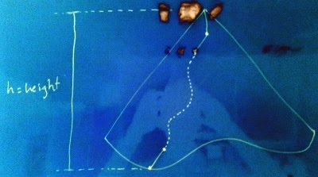

In a recent coding interview, I was asked to merge two Binary Search Trees (BSTs) without modifying them. This was the first time I was exposed to this question and for an hour or so I tried to come up with a linear time algorithm of O(1) space complexity. The defeat was inevitable. (To tell the truth, if a hint would be given like O(m+n) storage is allowed, I could easily figure out the solution without breaking a sweat.) As usual, I could not sleep that night and scratched dozens of papers to come up with a better solution. But as night passed, I started to realize the fact that the space complexity is lower bounded by the tree height. This blog post is set to keep a cyber-record of this pursuit.
Related Work
You can first start by checking the Google results. But, as usual, I am kind enough to provide you a tl;dr version: In order to merge two BSTs of size m and n nodes, there are a couple of common approaches of fixed O(m+n) processing time and space complexity, some of which are listed as follows.
- Insert given BSTs into a newly created BST.
- Create an array of elements of the first BST in sorted order, and use this array to merge the results to a new BST while traversing the second BST.
Further exposure to the higher doses of the problem is available through this and this StackOverflow threads.
On Complexity
You will definitely need an O(m+n) processing complexity to visit each node, that’s for sure. But what about O(m+n) space complexity? It means that you need to store one (or both) of the given trees in a vector in order to proceed with the merge. As it will turn out in the following paragraphs, actually space complexity is lower-bounded by the height of the tree, that is, O(h), where h=logn for a balanced tree.
The Trick
In its most basic form, we flatten both trees into two separate vectors. Next, we consume one element at a time from either of the trees with the smallest element. This scheme deserves a figure of its own.

It is certain that we effectively don’t need the whole elements of a tree packed into a single vector at once. At each step, what we ask for is the next smallest element. That is, we just need a stream of nodes traversed in-order.
Let’s further investigate the possibility of implementing a stream of nodes. In order to consume the elements of a binary search tree in sorted order, we need to traverse the tree in left-center-right node order. Assume that we have below traversal function. (Yes, it is in C++ and I shamelessly used templates.)
template <class T>
void traverse(Node<T>* root, queue<T>& items) {
if (root) {
traverse(root->left());
items.push(root->data());
traverse(root->right());
}
}What if I can suspend the execution at any point in time while pushing the data to a queue? In that case, what would be the maximum possible height of a recursive traverse() call stack? I know you like figures, so I took another photo of the board.

That is, the maximum call stack depth of a traverse() recursion is upper-bounded by the tree height. Coupled with the fact that successive traverse() calls are sufficient to consume the nodes of a tree in sorted order, we should be able to stream the nodes of tree with at most O(logn) node pointers.
Streaming Nodes
Since actual traverse call stack is bounded, we can emulate the recursive traverse using a stack of the nodes traversed so far from the root. The outline of the streaming algorithm is as follows.

The Prestige
Now we can stream a tree in sorted order using at most O(logn) storage. The rest is easy: Stream both trees and merge them while streaming.
The Code
I implemented a streamer (NodeStream), stream merger (MergeNodeStream), and a vector merger (MergeNodeVector) in C++ and Scala. Code is accessible through this Gist. You can also find implementations of the algorithm in C++ using Boost Coroutines and Haskell written by Remko.